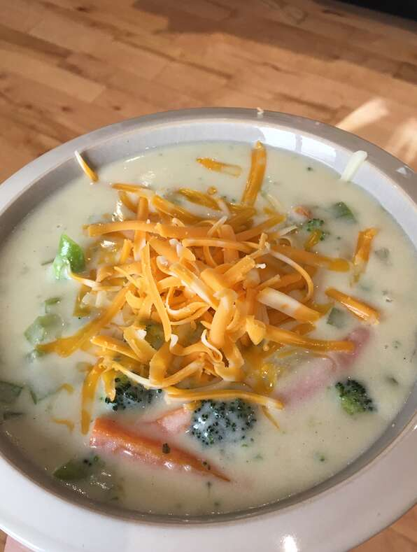

Broccoli Cheddar Soup

Ingredients
- 1 TBSP Butter
- 1/2 Chopped Onion
- 1/4 Cup Butter
- 1/4 Cup Flour
- 2 Cups Milk
- 2 Cups Chicken Stock
- 1 1/2 Cups Chopped Broccoli Florets
- 1 Cup Thin Carrots
- 1 Stalk Celery Sliced
- 2 1/2 Cups Shredded Sharp Cheddar Cheese
- Salt and Pepper to Taste
Directions
-
Melt 1 tablespoon butter in a skillet over medium-high heat. Saute onion
in hot butter until translucent, about 5 minutes. Set aside.
-
Whisk 1/4 cup melted butter and flour together in a large saucepan over
medium-low heat. Continue to whisk and cook , adding 1 to 2 tablespoons
of milk if necessary to keep the flour from burning, 3 to 4 minutes.
-
Gradually pour milk into flour mixture while whisking constantly. Stir
chicken stock into milk mixture. Bring to a simmer; cook until mixture
is thickened, about 20 minutes. Add broccoli, carrots, sauteed onion,
and celery; simmer until vegetables are tender, about 20 minutes.
-
Stir Cheddar cheese into vegetable mixture until cheese melts. Season
with salt and pepper to taste.